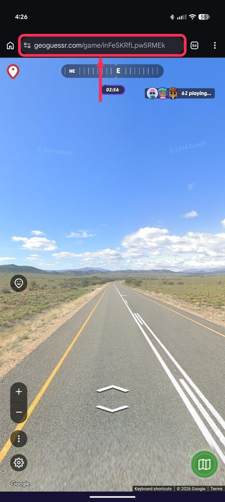
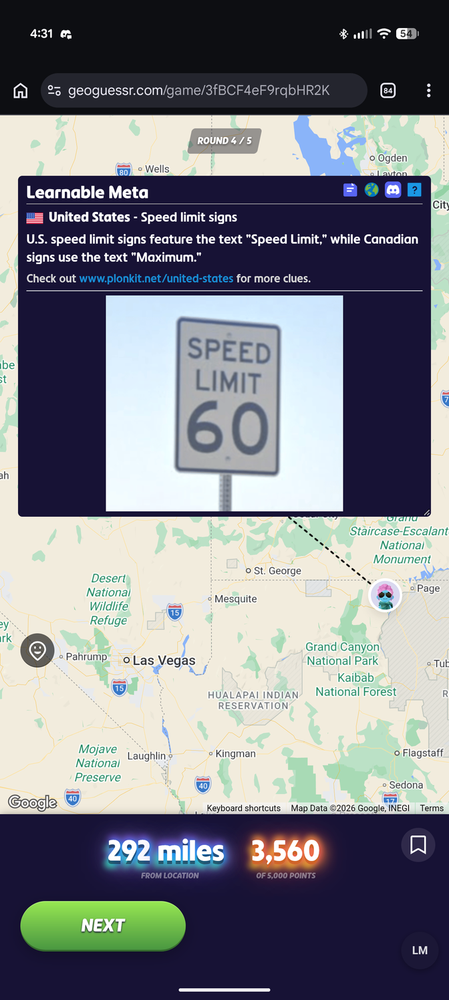

Play
Three steps, every game. You need the LM bookmark from the Android page first.
Every new map, tap LM again. The bookmark works for the game you are in. When you start another map, or the page reloads, the clues stop until you tap LM once more. Rounds inside the same game do not need it.
1
Open a Learnable Meta map and press Play
In your browser, go to www.geoguessr.com and log in. Open a Learnable Meta map, for example A Learnable Meta World - Basics. Press Play.

2
Tap the LM bookmark
When the round is on screen: tap the address bar, type LM, tap the LM bookmark.
Wait for "Learnable Meta loaded".



3
Guess
Place your pin and press Guess. The clue for that place appears. Press Next and play on; the clue comes back after every guess.

Good to know
- New map, new tap. Whenever you switch to another map, or reload the page, tap LM again. Rounds inside one game do not need it.
- Clues only appear on Learnable Meta maps.
- On a small phone the window is cramped. A tablet is better, or use "Desktop site" in the browser menu.